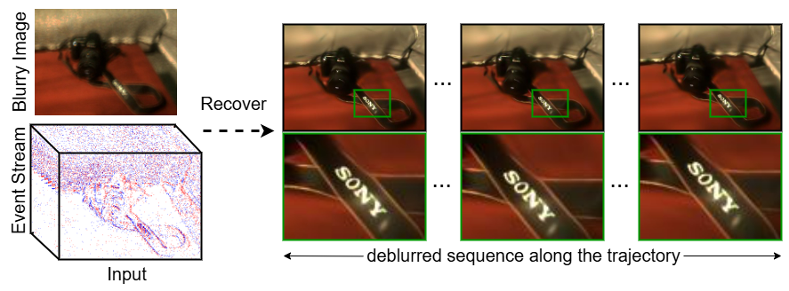

Deblurring from a Single Blurry Image using 3D Gaussian Splatting and Event Streams
Developed a framework to reconstruct sharp 3D scenes from just one blurry image, leveraging event streams for motion-aware deblurring. Jointly optimized 3D Gaussians and differentiable SE(3) Bézier trajectories, achieving ~4× faster training and 61% lower GPU memory usage with competitive PSNR across 15+ scenes.